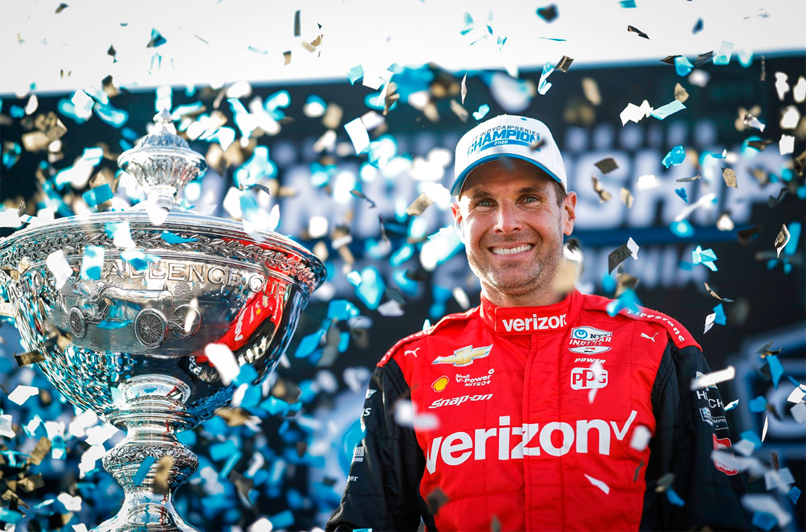
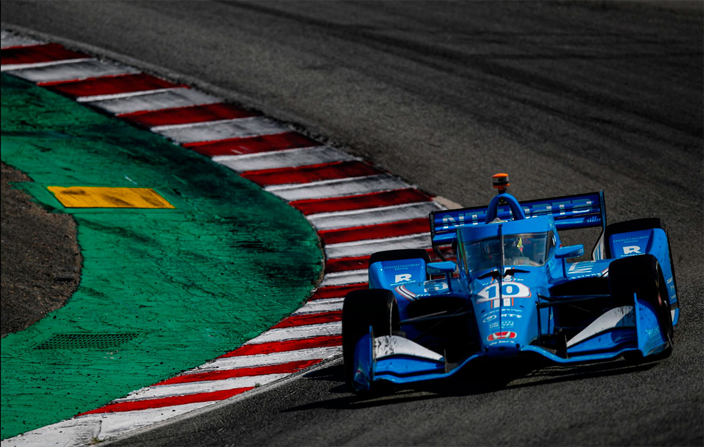
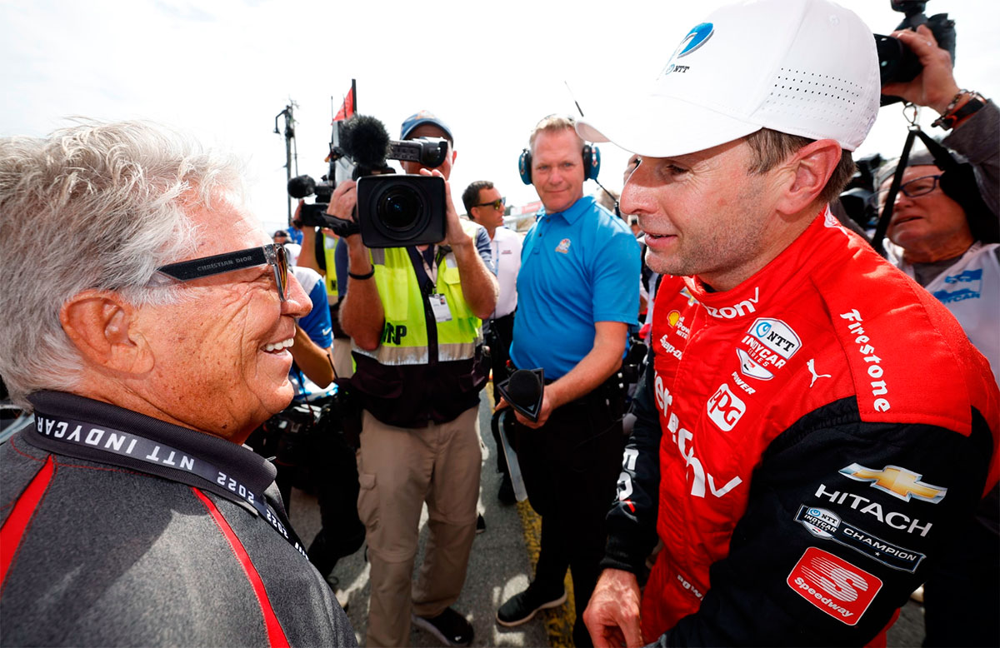
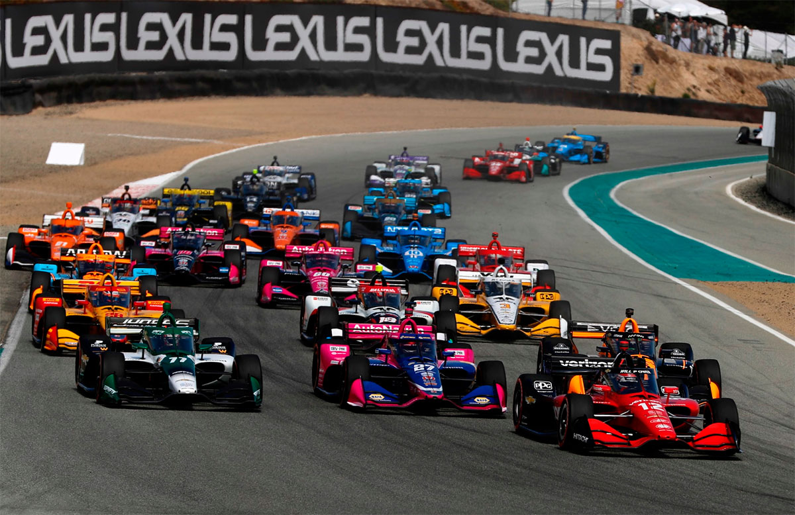
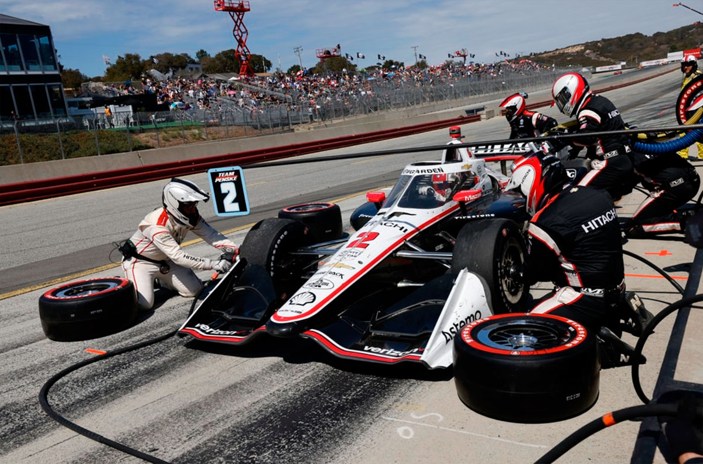
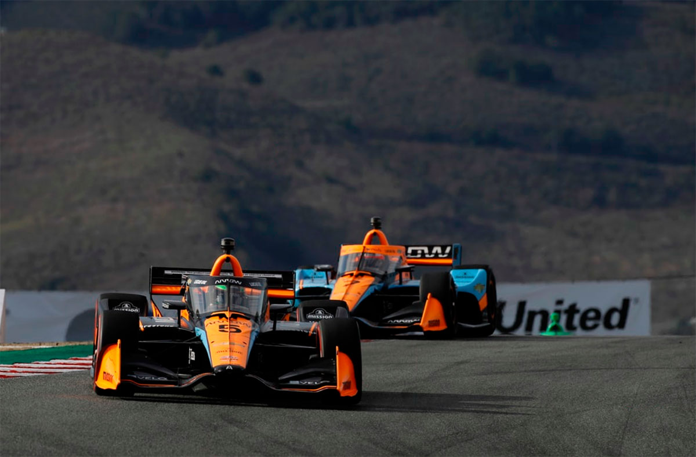
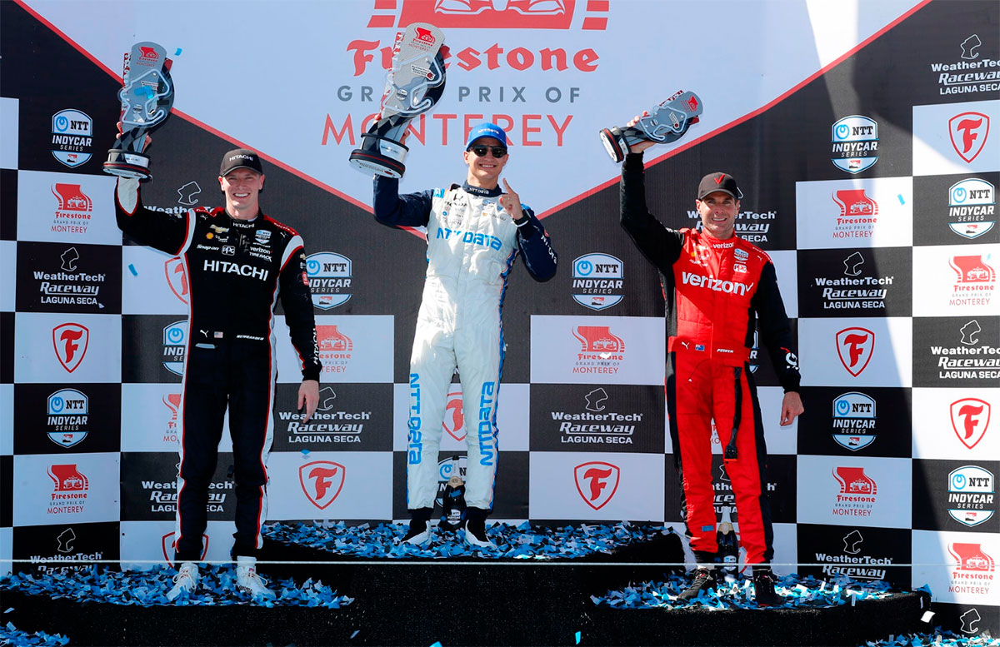

Laguna Seca - 04/03/2001
POWER É BI NO DOMÍNIO DE PALOU

O campeão dono passado estava imparável, mas a nova abordagem de Will Power lhe rendeu um segundo título aos 41 anos.
DAVID MALSHER-LOPEZ
Will Power vem pilotando de forma diferente este ano. Ele tem lidado com situações ruins e ao se reinventar como um modelo de consistência e perseguir sua meta de ganhar um segundo campeonato com uma devoção assustadoramente determinada, ele entregou a Roger Penske seu 16º título da IndyCar. Em Laguna Seca, Power teve que lutar, seu carro claramente não estava bom por cerca de 50 das 95 voltas, mas, como tem sido seu hábito este ano, ele se concentrou no objetivo e chegou em terceiro lugar, e isso foi mais do que suficiente. Ninguém tinha resposta para o ritmo de Alex Palou, que poderia/deveria/seria sua última corrida pela Chip Ganassi Racing.
Embora tenha chegado em Laguna Seca com uma vantagem de 20 pontos no campeonato sobre seu companheiro de equipe da Penske, Josef Newgarden, e Scott Dixon da Chip Ganassi, Power não queria que nenhum dos dois marcasse o ponto pela pole, um ponto por liderar uma volta, dois por liderar a maioria das voltas e, em seguida, vencer a corrida. Isso estava bem dentro da capacidade de ambos - eles são, afinal, grandes campeões em si mesmos e nas duas melhores equipes - e isso obrigaria Power a terminar pelo menos em terceiro lugar para vencer o campeonato. E se, digamos, Dixon fosse capaz de dominar dessa maneira, isso sugeriria que seus companheiros de equipe da Ganassi, Alex Palou e Marcus Ericsson, seriam rápidos o suficiente para manter Power fora dessa posição preciosa no pódio. E Palou havia liderado um teste recentemente lá...

Mas se há uma área em que Power não mudou, é na classificação. Ele simplesmente não consegue evitar dar tudo de si. E seu trabalho de tentar conquistar a pole foi consideravelmente facilitado quando Newgarden cometeu um erro básico. A IndyCar havia instalado triângulos de metal, que pareciam pouco maiores do que uma barra de Toblerone, no meio-fio esquerdo na entrada da famosa curva do saca rolha e um pouco mais abaixo do lado direito para desencorajar os pilotos de cortarem a lendária curva em "S" e evitar disputas sobre os limites da pista.
No Q1 Grupo 1, na sua volta inicial com pneus novos, Newgarden tocou o primeiro triângulo no lado esquerdo e sua rigidez foi o suficiente para tirar o controle do carro no ponto em que ele fica leve para o mergulho morro abaixo. O Dallara-Chevrolet #2 da Penske rodou e foi para a caixa de brita inclinada do lado direito, e quando Josef tentou deixá-lo rolar para voltar à pista, a nitidez do ângulo deixou-o suspenso no cone do bico e precisando ser resgatado. A bandeira vermelha foi agitada e o bicampeão perdeu suas duas voltas mais rápidas e foi condenado à última fila do grid. Isso teve um efeito cascata para outro jogador-chave na disputa pelo título. À medida que o tempo se esgotava, a IndyCar concedeu aos pilotos do Grupo 1 uma volta voadora e Dixon saiu dos boxes atrás do Dallara-Chevy de Kyle Kirkwood, da AJ Foyt Racing, e o novato estava muito devagar para o gosto do piloto da Ganassi, pois ele não conseguia gerar calor em seus pneus. O melhor esforço de Dixon não seria suficiente para levá-lo ao Q2 e, assim, ele foi condenado ao 13º lugar no grid.

Enquanto isso, Power passou para o Firestone Fast Six e fez o suficiente para vencer - por apenas dois centésimos de segundo - o surpreendente desafiante Callum Ilott (Juncos Hollinger Racing), ex-astro da Fórmula 2, que estava se divertindo ao voltar a uma pista que aprendeu no ano passado. A quinta pole de Power da temporada foi a 68ª de sua carreira, o que significa que ele ultrapassou Mario Andretti no topo da lista de maiores pole positions da IndyCar. A própria lenda foi parabenizar o ás da Penske no final da corrida e, embora Power tenha se sentido lisonjeado, grato e humilde, ele admitiu mais tarde que não havia se dado conta disso. Aquela pole, ele disse, se tratava apenas para adicionar um ponto precioso à sua pontuação, tornando um pouco mais difícil para Newgarden e Dixon conquistarem o campeonato, mesmo se eles chegassem à frente.
Conforme as coisas se desenrolaram, Dixon não seria um problema - ele nunca esteve na briga - mas Newgarden sim. Sem nada a perder, ele optou por uma estratégia de quatro paradas, permitindo que que atacasse sem preocupações com economia de combustível, e com uma preocupação muito reduzida com a vida útil dos pneus Firestone alternativos mais macios, que se mostraram facilmente desgastados pela superfície abrasiva e antiga da pista de 2,238 milhas de Laguna Seca. Ele faria stints mais curtos.
Na largada, Power liderou enquanto Ilott segurou o Dallara-Honda da Andretti de Romain Grosjean antes da curva 2 e foi largo, permitindo que Alexander Rossi, em sua última corrida pela Andretti, e Pato O'Ward da Arrow McLaren passassem por dentro. Rossi, que havia começado com pneus vermelhos usados, inicialmente se manteve a 1,5s de Power, mas depois sentiu seus pneus traseiros desgastarem, permitindo que O'Ward e Ilott o ultrapassassem no fim da volta 11. Power, que havia largado com pneus vermelhos novos, estendeu seu primeiro stint até a volta 15 antes de parar para trocar os pneus.
Mas o líder do campeonato estava com problemas, sua velocidade era bastante decepcionante. Depois de parecer lento no warm-up de domingo de manhã, a equipe reverteu seu acerto para algo próximo do que ele usou aqui no ano passado, e em seu primeiro conjunto de pneus novos, simplesmente não funcionou, com Power descrevendo seu carro como "incontrolável", em vez de se fixar no asfalto. Enquanto isso, Palou, que havia largado em 11º após uma penalidade de seis lugares no grid por uma troca precoce de motor, se aproximou dos líderes.

A Ganassu colocou pneus novos no carro #10 e, apesar da falta de aderência em comparação com os carros com pneus alternativos ao seu redor, ele subiu para o oitavo lugar na primeira volta, ultrapassou a Penske de Scott McLaughlin na quinta volta e era o sexto no final da décima volta. Ele permaneceu na pista e assumiu a liderança antes de ir para os boxes na volta 19. Adotando os pneus vermelhos justamente quando seus rivais estavam mudando para os pneus novos menos aderentes, Palou rapidamente ultrapassou os pilotos à sua frente e tomou a liderança de Power na volta 27, na curva 4. Mais atrás, Newgarden estava subindo. Depois de ultrapassar os carros mais lentos nas primeiras voltas, ele chegou na volta 23 com os pneus iniciais antes de ir para os boxes e emergir em 14º. Em seguida, ele passou 11 voltas felizes cortando o pelotão até chegar em sétimo lugar, parecendo estar usando o motor de especificação de 2,4 litros de 2024. Uma parada nos boxes na volta 35 o deixou apenas em nono lugar, e então o carro de Ilott morreu na saída dos boxes. Não estava em um lugar particularmente perigoso, e então a IndyCar permitiu que os pilotos que quisessem parar fossem para os boxes antes do surgimento da bandeira amarela e o fechamento dos boxes. Power estava entre os que pararam, e pediu para retirar um pouco do asa dianteira para neutralizar a instabilidade do carro nas curvas de baixo. Mas isso acabou não sendo a resposta, e o carro agora estava com falta de aderência, na frente e atrás!

No reinício da volta 42, Palou liderava confortavelmente após a espalhada de Power para segurar Felix Rosenqvist na curva 2. Tendo parado logo antes da bandeira amarela e adotado um segundo conjunto de pneus alternativos, Newgarden estava em um ritmo diferente dos que estavam ao sua frente mais uma vez. Ele conseguiu subir para um quinto lugar, não parando durante a bandeira amarela, e após o reinício ele ultrapassou O'Ward e Rosenqvist rapidamente, ambos na entrada do Saca rolha. Ele fez a mesma manobra em Power na volta 46, mas a essa altura já estava a cerca de 7,2 segundos atrás de Palou e não poderia mais progredir. De fato, Palou se distanciou antes de fazer sua última parada na volta 68, uma epois de Power, que desta vez teve mais regulagem na asa dianteira adicionada em seu pit stop. A parada de Palou nos boxes permitiu que Newgarden assumisse a liderança por cinco voltas antes de o campeão de 2017 e 2019 parar pela quarta vez e colocar pneus novos. Ele havia conseguido abrir uma vantagem suficiente sobre Power no strint anterior e emergiu à frente, mas por uma margem mínima. Power, agora com o equilíbrio certo graças ao ajuste na asa dianteira e um jogo de pneus Firestone que funcionava bem, foi capaz de seguir de perto o seu companheiro de equipe. Isso era tudo o que ele precisava: não iria arriscar o seu carro ou o seu campeonato fazendo uma tentativa de ultrapassagem arriscada e desnecessária no seu companheiro de equipe. Considerando que se sentia mais rápido do que Newgarden agora, talvez Power tivesse tentado ultrapassar se estivesse em jogo a vitória da corrida, mas Palou estava simplesmente em um nível diferente, se distanciando dos pilotos da equipe Penske aparentemente sem esforço, de modo que ele cruzou a linha de chegada depois de 95 voltas, com meia hora de vantagem.

Power permitiu-se diminuir o ritmo um pouco nas últimas cinco voltas, sem mais riscos de Grosjean, que havia iniciado o último trecho de pneus vermelhos, mas eles caíram, 26 voltas em um conjunto de pneus vermelhos nunca iria funcionar! Ele perdeu o quarto lugar para Rosenqvist na volta 88, o quinto para o novato Christian Lundgaard na 93 e o sexto para McLaughlin na 95. O modo enérgico de McLaughlin no último trecho fez com que ele ultrapassasse Rossi e Marcus Ericsson, e assim se igualasse em pontos com Palou, mas ele será classificado em quarto lugar no campeonato à frente do vencedor da corrida, por ter a vantagem nas vitórias, 3-1.
O vencedor da Indy 500, Ericsson, caiu para sexto lugar na tabela ao chegar em nono lugar. Palou foi perguntado após a corrida sobre sua situação com a Chip Ganassi Racing, mas ele não se comprometeu quanto a quem prevaleceria na batalha legal entre Ganassi e McLaren por seus serviços em 2023. Ainda assim, esta corrida foi um lembrete oportuno de suas habilidades e por que duas grandes equipes estão lutando por ele. Newgarden foi gentil o suficiente para admitir que mesmo que tivesse começado na frente, provavelmente não teria como acompanhar o ritmo de Palou e, portanto, condenou suas esperanças de título. E Power? Ele estava, em suas próprias palavras, "mentalmente esgotado", mas feliz em mudar seu foco de vitórias para seu segundo título.

| RK | DRIVER | POINTS | WINS | POLES | TOP 5 | TOP 10 |
|---|---|---|---|---|---|---|
| 1 | Will Power | 560 | 1 | 5 | 12 | 13 |
| 2 | Josef Newgarden | 544 | 5 | 1 | 8 | 12 |
| 3 | Scott Dixon | 521 | 2 | 1 | 9 | 15 |
| 4 | Scott McLaughlin | 510 | 3 | 3 | 8 | 12 |
| Álex Palou | 510 | 1 | 0 | 6 | 13 | |
| 6 | Marcus Ericsson | 506 | 1 | 0 | 5 | 12 |
| 7 | Pato O'Ward | 480 | 2 | 1 | 8 | 9 |
| 8 | Felix Rosenqvist | 393 | 0 | 2 | 3 | 10 |
| 9 | Alexander Rossi | 381 | 1 | 1 | 5 | 9 |
| Colton Herta | 381 | 1 | 2 | 5 | 8 | |
| 11 | Graham Rahal | 345 | 0 | 0 | 2 | 9 |
| 12 | Rinus VeeKay | 331 | 0 | 1 | 3 | 6 |
| 13 | Romain Grosjean | 328 | 0 | 0 | 3 | 7 |
| 14 | Christian Lundgaard | 323 | 0 | 0 | 2 | 7 |
| 15 | Simon Pagenaud | 314 | 0 | 0 | 1 | 7 |
| 16 | David Malukas | 305 | 0 | 0 | 1 | 3 |
| 17 | Conor Daly | 267 | 0 | 0 | 1 | 2 |
| 18 | Helio Castroneves | 263 | 0 | 0 | 0 | 3 |
| 19 | Takuma Sato | 258 | 0 | 0 | 1 | 4 |
| 20 | Callum Ilott | 219 | 0 | 0 | 0 | 2 |
| 21 | Jimmie Johnson | 214 | 0 | 0 | 1 | 2 |
| 22 | Jack Harvey | 209 | 0 | 0 | 0 | 1 |
| 23 | Devlin DeFrancesco | 206 | 0 | 0 | 0 | 0 |
| 24 | Kyle Kirkwood | 183 | 0 | 0 | 0 | 1 |
| 25 | Dalton Kellett | 133 | 0 | 0 | 0 | 0 |
| 26 | Tony Kanaan | 78 | 0 | 0 | 1 | 1 |
| 27 | Ed Carpenter | 75 | 0 | 0 | 0 | 0 |
| 28 | Santino Ferrucci | 71 | 0 | 0 | 0 | 2 |
| 29 | Tatiana Calderon | 58 | 0 | 0 | 0 | 0 |
| 30 | JR Hildebrand | 53 | 0 | 0 | 0 | 0 |
| 31 | Juan Pablo Montoya | 44 | 0 | 0 | 0 | 0 |
| 32 | Simona De Silvestro | 34 | 0 | 0 | 0 | 0 |
| 33 | Marco Andretti | 17 | 0 | 0 | 0 | 0 |
| 34 | Sage Karam | 14 | 0 | 0 | 0 | 0 |
| 35 | Stefan Wilson | 10 | 0 | 0 | 0 | 0 |